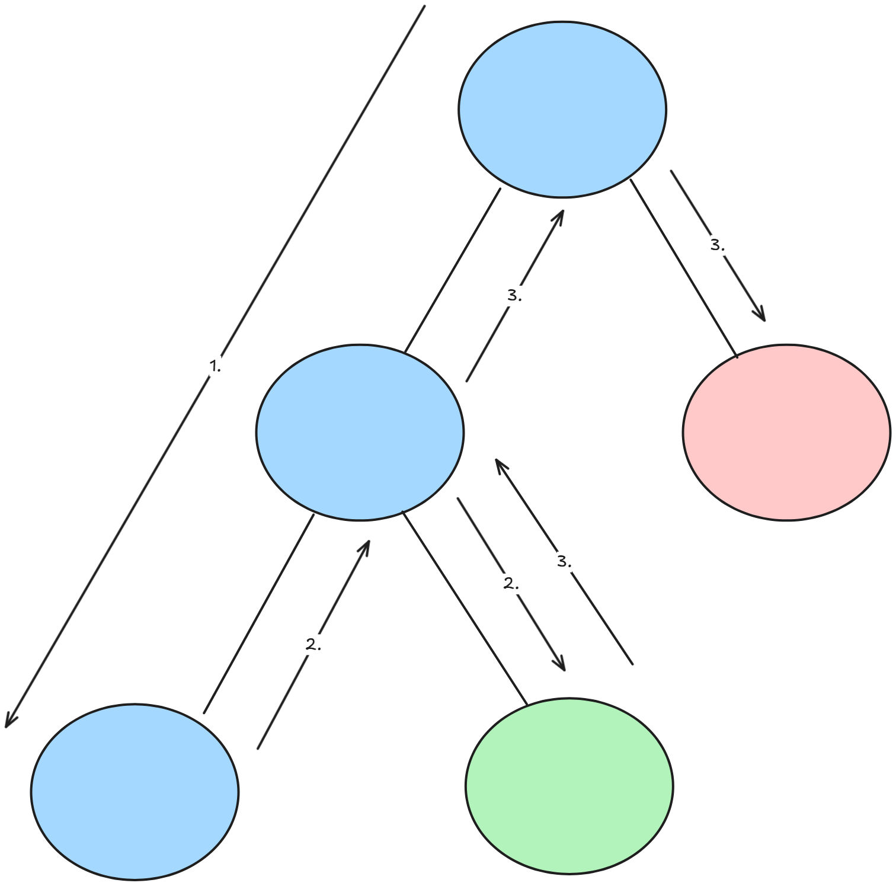
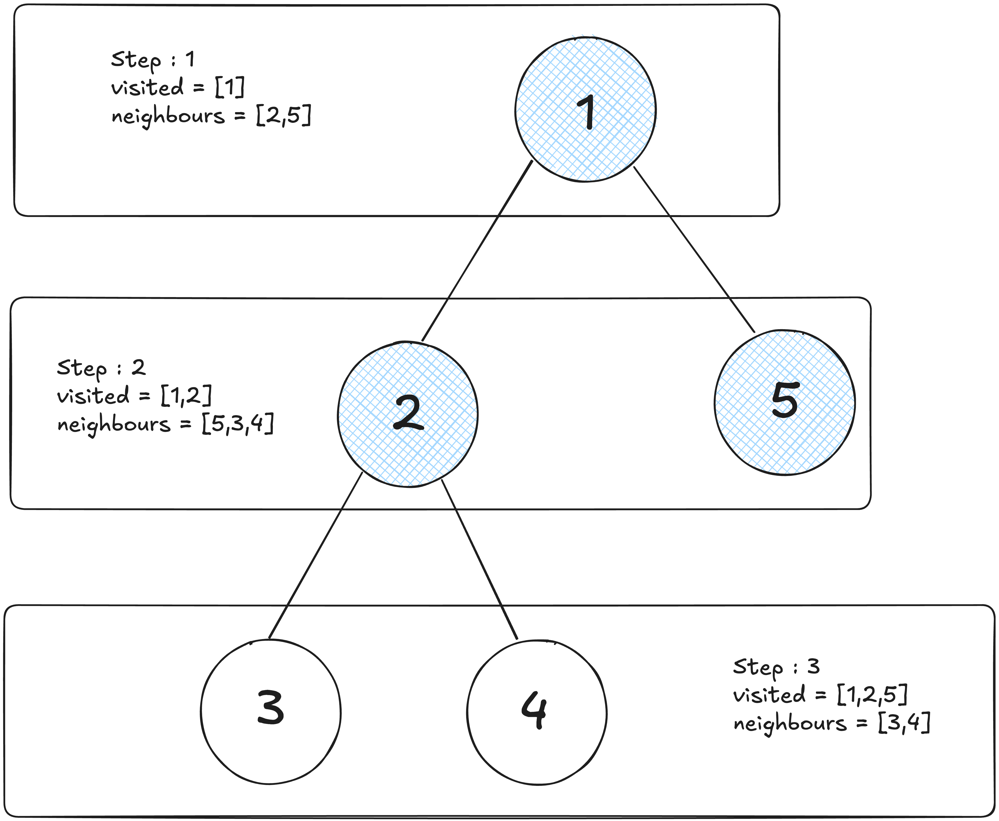

Before writing this I took a minute and remembered how I imagined myself writing algorithms for optimizing data models which fastens up the data retrieval rate would look like. But by time I grew in this field I got to know that algorithms aren’t just code. These are some of the smart ways to tackle a problem and make data work faster
As ritual I will be covering few algo topics here which I use/have used on
basis of my projects, paid gigs etc. The complexity of these algorithms
will rise up gradually as the blog continues.
I hope you all know what is Linear Search ?
If not no worries this is the most common technique used by algorithms to
lookup for a solution to the problem, take it as searching for word in
dictionary before knowing "How to search words in dictionary" going
through all the pages, but its okkay if the dictionary had only 10 to 15
pages but you would need a better and optimized way when there are
literally 800+ pages
This is a fast and efficient algorithms but only for sorted array or list,
works by repeatedly dividing in the search space in half, which reduces
the number of elements to check. Starting at the middle of the array, it
compares the target value to middle element. If the target matches, the
search is complete.
If the target is smaller, it searches the left half, if larger the
right half. This process continues until the value is found
For algorithms we will be talking more about time complexity. So Binary Search's time complexity is \(O (\log n)\), making it faster than linear search for large sorted datasets
This is mainly used in searching databases, lookup tables, or implementing features like autocomplete. Here is an example of an api function which searches for a user by ID in a sorted list of users.
After using Binary Search Algorithm, for 10k users it just needs 14 comparisons at most to find any user
This algorithm can also be applied in client side for searching an item in a sorted dropdown list
The idea of DFS is starting with the root node and go as far down one branch as possible, all the way to the end.
After reaching the dead end we come back to the last visited node, this process of going back to the last visited node is called Backtracking[2]. We check if there are any unvisited nodes left. If there are, we explore those nodes next. If not, we backtrack again to the previous node. This process repeats until every node in the graph or tree has been visited[3].
The time complexity of DFS depends on the graph's structure. For a graph with Vvertices (nodes) and E edges (connections), using a list of connected nodes. DFS takes \(O(V + E)\) time. This because it visits each vertex once and checks all edges to explore neighbors. It’s fast for most graphs, especially sparse ones like social networks, as it only processes the actual connections
One of the OSS issue on which I worked was related to ui rendering nested comments inefficiently with manual looping, which struggled with deep nesting
My Pull request for the same issue, used DFS. I have attached the full anatomy here
This can also be used for detecting cycles in dependency graphs for building package managers.
In Breadth first search it explores graphs differently. Instead of diving deep like DFS, BFS visits all nodes at the current "level" before moving to next.
Starting from a chosen node, it explores all its immediate neighbors first, then their neighbors, and so on. This makes BFS ideal for finding the shortest path in unweighted graphs for exploring nodes closer to starting point.
For the time complexity part we can say its similar to DFS which is \(O (V + E) \) but the only difference is, BFS uses queue to track nodes, ensuring it explores closer nodes first, which is why its great for finding shortest paths in unweighted graphs, like in navigation apps or GPS
Code Dissection of Friends graph is written below
Insertion sort is a simple sorting algorithm that builds a sorted array one element at a time.
Starting with the second element, insertion sort compares it to the previous ones, shifting larger elements right until it finds the right spot to "insert" the element. This process repeats for each element until the entire array is sorted. Works well for small datasets or nearly sorted lists, like organizing a short list of names or numbers.
The time complexity of Insertion Sort depends on the array size and its initial order. For an array with n elements, the worst-case time complexity is \(O(n^2)\), as each element may need to be compared and shifted against all previous elements, like when the array is reverse-sorted. In the best case, such as a nearly sorted array, it runs in \(O(n)\) time, as each element requires minimal comparisons and shifts. This makes Insertion Sort efficient for small or nearly sorted datasets but less ideal for large, unsorted lists compared to faster algorithms like Quick Sort.
We can code a Search history using insertion sort
Its a reliable sorting algorithm which uses a divide and conquer approach to sort arrays efficiently.
It works by splitting the array into two halves, sorting each half recursively, and then merging the sorted halves back together to create a fully sorted array. Its stable meaning, it preserves the relative order of equal elements, and is ideal for large datasets, like sorting customer records or database entries, due to its consistent performance.

Lets talk a little about the time complexity here, merge sort has a time complexity of \(O(n log n)\) in all cases from best, average to worst. For example lets take the above figure which is [4, 2, 5, 1, 8, 3, 7, 6] here \(n=8\) elements and for \(n=8\), it takes \(log_2 8 = 3\) levels of division (8 -> 4 pairs -> 2 groups of 4 -> 1 group of 8). Our figure starts with four groups of two, which is part of this process
At each level, all \(n\) elements are merged. Merging two sorted lists
compares and combines elements in linear time. Merging four pairs \(([4,
2], [5, 1], [8, 3], [7, 6])\) into two groups takes about 8 comparisons
total. Merging two groups \(([1, 2, 4, 5], [3, 6, 7, 8])\) into one takes
another 8 comparisons
The O(n log n) complexity holds because the number of divisions is
logarithmic \(log n \), and each merge step scales linearly with \(n \).
Unlike Insertion Sort's \(O(n^2)\) (upto 64 operations for n = 8)
Before
The API gets session data from the DB. Uses
.sort() which may be unstable or optimized differently
depending on V8 engine. So we get less control over performance in large
datasets
After using Merge Sort
After using our own implementation of merge sort and replacing it with
built-in sort, it helped with performance tuning and custom rules which
can handling large logs or preprocessing logs offline
This uses the same strategy as Merge Sort algorithm which is divide and conquer strategy to sort arrays. But it works by picking a "pivot" element, partitioning the array so that element smaller than the pivot are on its left and larger ones on its right, then recursively sorting the left and right sub-arrays.

Quick Sort is fast and widely used for large datasets, like sorting student grades or product lists, due to its average-case speed.
For an array with n elements, Quick Sort’s time complexity is \(O (n log n)\) on average, making it very fast for most cases. It divides the array into two parts around a pivot, ideally halving the problem size each time, requiring log n levels and n comparisons per level. sorting an array of 8 elements takes about 24 operations (8 * log 8). In the worst case, like a sorted or reverse-sorted array with a poor pivot choice, it can degrade to O(n²), but this is rare with good pivot strategies.
Choosing a good pivot is crucial for efficiency, as it effects how evenly the array is split. Here are some common steps you can include while choosing one :
Before
The best way I learned quick sort algorithm was by implementing it in a
e-commerce api in which products were sorted by price, at first I thought
using .sort() would be but NVM XDD. It was simple and short
but lacked control and it can't handle complex logic lick preprocessing,
side effects, or tracing steps for debugging
After
After learning and implementing my own Quick Sort to sort products by
price, this let me add debug logs, skip invalid prices, add thresholds or
filtering inline, or customize order (ascending / descending)
I wanted to add greedy algorithm and DP but that would be an overkill for
this blog, these are searching and sorting algorithms which is mainly used
during development
Hope I was able to add few value to your today's learning :)